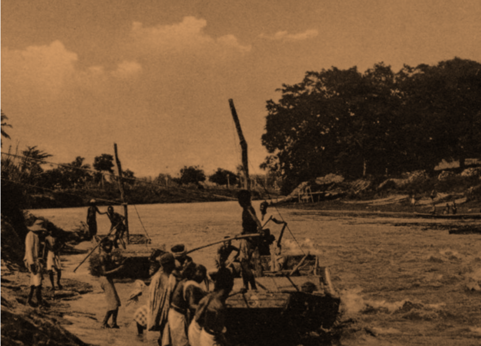
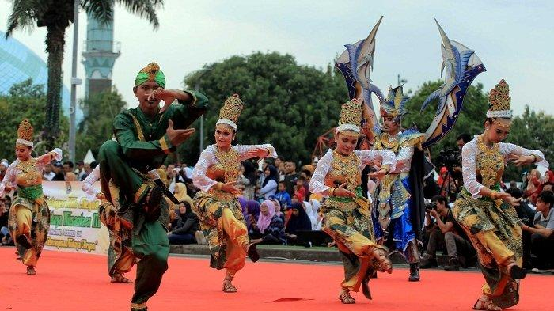
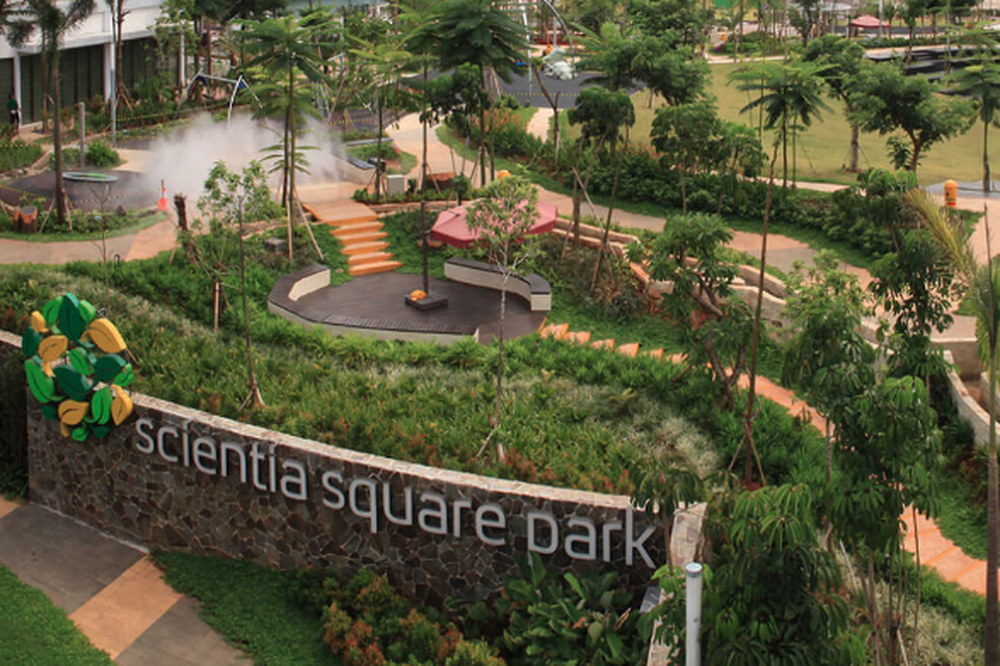
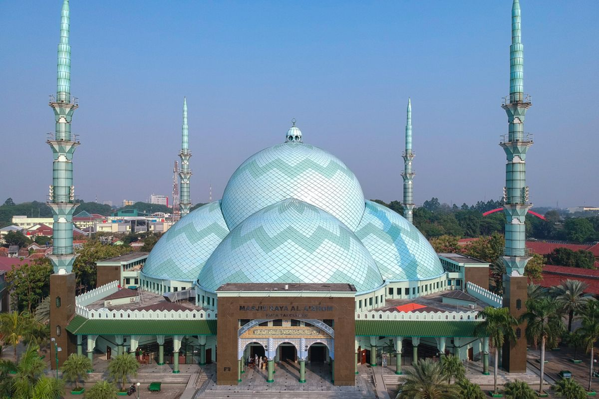

Sejarah

Sejarah Kota Tangerang berawal dari abad ke-17, ketika wilayah ini berada di bawah kekuasaan Kesultanan Banten. Pada tahun 1682, terjadi perselisihan antara Kesultanan Banten dan VOC (Vereenigde Oostindische Compagnie), yang saat itu merupakan perusahaan dagang Belanda. Untuk mempertahankan wilayahnya dari pengaruh VOC yang semakin kuat di Batavia (sekarang Jakarta), Kesultanan Banten membangun benteng di tepi Sungai Cisadane, yang kemudian dikenal sebagai Benteng Tangerang.
Nama "Tangerang" sendiri berasal dari kata "Tengger," yang berarti tanda atau batas, dan "Perang," yang mengacu pada situasi konflik pada saat itu. Daerah ini menjadi garis pertahanan antara Kesultanan Banten dan wilayah Batavia yang dikuasai VOC. Setelah Banten jatuh ke tangan VOC pada awal abad ke-19, Tangerang menjadi bagian dari wilayah administratif Hindia Belanda.
Budaya

Kota Tangerang memiliki keragaman budaya yang kaya, terutama dipengaruhi oleh sejarah panjangnya sebagai persimpangan berbagai kelompok etnis dan budaya. Salah satu komunitas yang paling menonjol adalah komunitas Tionghoa, yang telah hadir di Tangerang sejak era kolonial. Pengaruh budaya Tionghoa ini terlihat dalam tradisi, arsitektur, dan kuliner lokal. Klenteng-klenteng bersejarah seperti Klenteng Boen Tek Bio adalah salah satu ikon budaya yang mencerminkan jejak peranakan Tionghoa di Tangerang. Festival Cap Go Meh dan Imlek juga dirayakan secara meriah di kota ini, menarik perhatian tidak hanya dari komunitas Tionghoa tetapi juga masyarakat umum.
Selain itu, budaya Betawi juga memiliki pengaruh besar di Tangerang. Kesenian seperti lenong, ondel-ondel, dan tarian tradisional Betawi sering dipentaskan dalam berbagai acara kebudayaan lokal. Kuliner khas Betawi seperti kerak telor dan soto Betawi juga menjadi bagian tak terpisahkan dari identitas budaya Tangerang. Kota ini juga merupakan tempat di mana berbagai budaya lain dari seluruh Indonesia bertemu dan hidup berdampingan, menciptakan keragaman sosial yang unik dan dinamis, tercermin dalam tradisi gotong royong serta kerukunan antarumat beragama.
Geografis

Kota Tangerang terletak di bagian barat Provinsi Banten dan merupakan bagian dari wilayah metropolitan Jabodetabek. Secara geografis, kota ini berbatasan langsung dengan DKI Jakarta di sebelah timur, Kabupaten Tangerang di sebelah utara dan barat, serta Kota Tangerang Selatan di sebelah selatan. Kota ini memiliki luas sekitar 164,54 km² dan dilalui oleh Sungai Cisadane, yang menjadi salah satu elemen penting dalam kehidupan ekonomi dan sosial masyarakat Tangerang sejak dahulu kala. Keberadaan sungai ini juga memberikan karakteristik topografi kota yang relatif datar, cocok untuk pengembangan pemukiman, industri, dan transportasi.
Kota Tangerang berada di dataran rendah dengan ketinggian rata-rata sekitar 25-30 meter di atas permukaan laut. Iklimnya adalah iklim tropis dengan dua musim utama, yaitu musim hujan dan musim kemarau. Curah hujan tinggi biasanya terjadi antara bulan November hingga Maret, sementara musim kemarau berlangsung antara April hingga Oktober. Dengan letaknya yang strategis sebagai pintu gerbang menuju Jakarta, ditambah dengan kehadiran Bandara Internasional Soekarno-Hatta di wilayahnya, Tangerang memiliki peran penting dalam lalu lintas perdagangan dan mobilitas di Indonesia.
Wisata
Berwisata di Kota Tangerang menawarkan pengalaman menarik dengan perpaduan antara nuansa modern dan sejarah yang kaya. Kota ini, yang terletak di dekat Jakarta, memiliki banyak tempat wisata yang cocok untuk liburan keluarga atau perjalanan singkat. Berikut ini adalah dua destinasi wisata populer di Tangerang yang bisa menjadi pilihan menarik.
Scientia Square Park

Scientia Square Park adalah tempat wisata modern yang sangat cocok untuk keluarga dan anak-anak. Terletak di kawasan Gading Serpong, taman ini menawarkan berbagai aktivitas outdoor, seperti bersepeda, berlari, memberi makan kelinci dan ikan, hingga berkuda. Bagi penggemar olahraga ekstrem, ada area skatepark dan climbing wall yang bisa dicoba. Di malam hari, taman ini menjadi lebih hidup dengan pertunjukan lampu dan suasana yang menyenangkan. Dengan area yang hijau dan asri, Scientia Square Park menjadi tempat yang ideal untuk bersantai dan menikmati waktu bersama keluarga.
Masjid Al-Azhom

Masjid Al-Azhom, yang merupakan ikon religi di Kota Tangerang, dikenal sebagai salah satu masjid terbesar di Indonesia dengan arsitektur yang megah dan unik. Masjid ini memiliki lima kubah besar yang melambangkan rukun Islam, dengan kubah utama yang menjadi daya tarik tersendiri. Selain sebagai tempat ibadah, masjid ini sering menjadi tujuan wisata religi, terutama pada bulan Ramadan, di mana pengunjung bisa merasakan suasana yang khidmat dan meriah. Halaman masjid yang luas juga sering digunakan untuk acara keagamaan dan kegiatan sosial, menjadikannya salah satu destinasi penting di Tangerang.